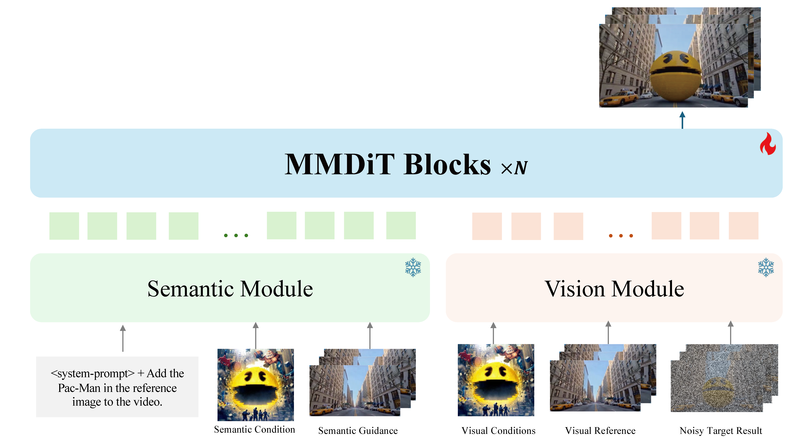

Unified Visual Creation Model
Rapid advancements in Multimodal Large Language Models have accelerated visual content creation, yet today’s ecosystem remains fragmented across images and videos, as well as across generation, controllable synthesis, and transformation. This fragmentation makes it difficult to build a single system that consistently grounds user intent, preserves identity and structure, and maintains temporal coherence under diverse conditioning signals. We introduce Capybara, a unified visual creation foundation model that supports from-scratch creation (T2I, T2V), conditional generation (I2V), and transformation under rich multimodal context within one architecture and one conditioning interface. Capybara is enabled by three key components: (i) a native unified design that decouples semantic intent modeling from pixel synthesis, strengthening intent grounding and reliable instruction following; (ii) an intrinsic 3D-aware consistency mechanism that integrates geometric priors (e.g., depth and normal cues) to stabilize identity and structure across space and time; and (iii) a multi-task training paradigm powered by a diverse data synthesis pipeline, which promotes broad generalization across heterogeneous creation modes. Extensive evaluations show that Capybara delivers high-fidelity outputs with precise semantic adherence and physics-grounded spatiotemporal coherence, providing a seamless end-to-end workflow that unifies image-level precision with video-level dynamics.
